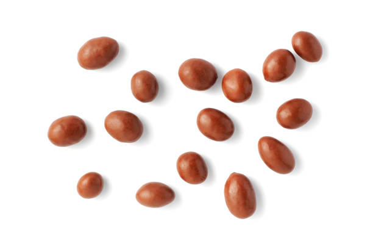
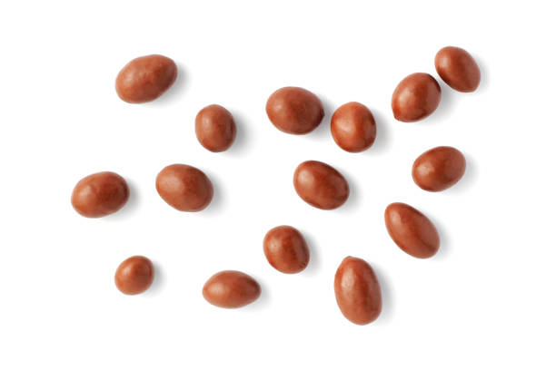
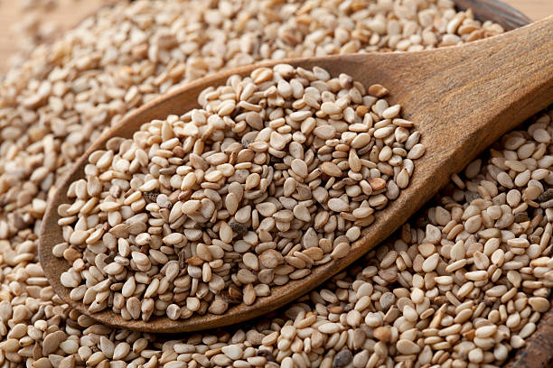
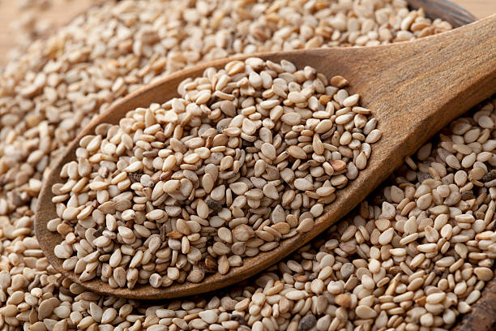
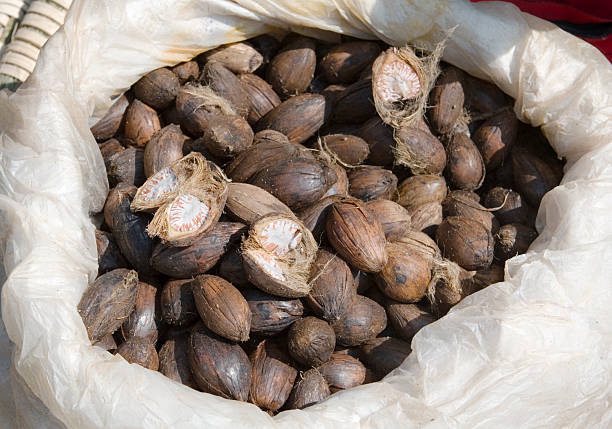
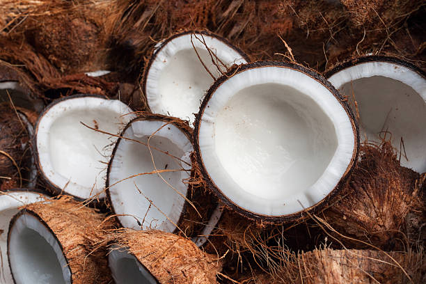

Groundnut, predominantly grown in Karnataka, is cultivated during the Kharif season (June to September) and harvested by October to November. Karnataka is one of the leading states for groundnut production, especially in regions like Gulbarga and Koppal. It thrives in well-drained sandy or loamy soils with a pH of 6-7. Optimal soil temperature ranges from 25-30°C. Nutritionally, groundnut is rich in protein, healthy fats, and vitamins. The growing cycle takes about 120-150 days and requires moderate water and fertilization. Demand is particularly high in Gujarat, Maharashtra, and Andhra Pradesh, where groundnut is widely used in cooking and oil production.
ಕರ್ನಾಟಕದಲ್ಲಿ ಪ್ರಧಾನವಾಗಿ ಬೆಳೆಯುವ ನೆಲಗಡಲೆಯನ್ನು ಖಾರಿಫ್ ಋತುವಿನಲ್ಲಿ (ಜೂನ್ ನಿಂದ ಸೆಪ್ಟೆಂಬರ್) ಬೆಳೆಸಲಾಗುತ್ತದೆ ಮತ್ತು ಅಕ್ಟೋಬರ್ ನಿಂದ ನವೆಂಬರ್ ವೇಳೆಗೆ ಕೊಯ್ಲು ಮಾಡಲಾಗುತ್ತದೆ. ಕರ್ನಾಟಕವು ಶೇಂಗಾ ಉತ್ಪಾದನೆಯಲ್ಲಿ ಪ್ರಮುಖ ರಾಜ್ಯಗಳಲ್ಲಿ ಒಂದಾಗಿದೆ, ವಿಶೇಷವಾಗಿ ಗುಲ್ಬರ್ಗ ಮತ್ತು ಕೊಪ್ಪಳದಂತಹ ಪ್ರದೇಶಗಳಲ್ಲಿ. ಇದು 6-7 pH ನೊಂದಿಗೆ ಚೆನ್ನಾಗಿ ಬರಿದುಹೋದ ಮರಳು ಅಥವಾ ಲೋಮಮಿ ಮಣ್ಣಿನಲ್ಲಿ ಬೆಳೆಯುತ್ತದೆ. ಸೂಕ್ತವಾದ ಮಣ್ಣಿನ ತಾಪಮಾನವು 25-30 ° C ವರೆಗೆ ಇರುತ್ತದೆ. ಪೌಷ್ಠಿಕವಾಗಿ, ಕಡಲೆಕಾಯಿಯಲ್ಲಿ ಪ್ರೋಟೀನ್, ಆರೋಗ್ಯಕರ ಕೊಬ್ಬುಗಳು ಮತ್ತು ಜೀವಸತ್ವಗಳು ಸಮೃದ್ಧವಾಗಿವೆ. ಬೆಳೆಯುತ್ತಿರುವ ಚಕ್ರವು ಸುಮಾರು 120-150 ದಿನಗಳನ್ನು ತೆಗೆದುಕೊಳ್ಳುತ್ತದೆ ಮತ್ತು ಮಧ್ಯಮ ನೀರು ಮತ್ತು ಫಲೀಕರಣದ ಅಗತ್ಯವಿರುತ್ತದೆ. ವಿಶೇಷವಾಗಿ ಗುಜರಾತ್, ಮಹಾರಾಷ್ಟ್ರ ಮತ್ತು ಆಂಧ್ರಪ್ರದೇಶದಲ್ಲಿ ಬೇಡಿಕೆ ಹೆಚ್ಚಿದೆ, ಅಲ್ಲಿ ಕಡಲೆಕಾಯಿಯನ್ನು ಅಡುಗೆ ಮತ್ತು ಎಣ್ಣೆ ಉತ್ಪಾದನೆಯಲ್ಲಿ ವ್ಯಾಪಕವಾಗಿ ಬಳಸಲಾಗುತ್ತದೆ.
6.SUNFLOWER / 6.ಸೂರ್ಯಕಾಂತಿ
Sunflower, widely cultivated in Karnataka, is primarily grown during the Kharif season (June to September) and harvested by November. Karnataka has a significant market share, particularly in regions like Bagalkot and Dharwad. Sunflowers thrive in well-drained, loamy or sandy soils with a pH of 6-7. Optimal soil temperature ranges from 20-30°C. Nutritionally, sunflower seeds are rich in healthy fats, protein, and vitamins. The growing cycle typically takes about 90-120 days and requires moderate water and fertilization. Demand is particularly high in states like Maharashtra, Andhra Pradesh, and Gujarat, where sunflower oil is a staple cooking ingredient.
ಕರ್ನಾಟಕದಲ್ಲಿ ವ್ಯಾಪಕವಾಗಿ ಬೆಳೆಯಲಾಗುವ ಸೂರ್ಯಕಾಂತಿಯನ್ನು ಪ್ರಾಥಮಿಕವಾಗಿ ಖಾರಿಫ್ ಋತುವಿನಲ್ಲಿ (ಜೂನ್ ನಿಂದ ಸೆಪ್ಟೆಂಬರ್) ಬೆಳೆಯಲಾಗುತ್ತದೆ ಮತ್ತು ನವೆಂಬರ್ ವೇಳೆಗೆ ಕೊಯ್ಲು ಮಾಡಲಾಗುತ್ತದೆ. ಕರ್ನಾಟಕವು ಗಮನಾರ್ಹವಾದ ಮಾರುಕಟ್ಟೆ ಪಾಲನ್ನು ಹೊಂದಿದೆ, ವಿಶೇಷವಾಗಿ ಬಾಗಲಕೋಟೆ ಮತ್ತು ಧಾರವಾಡದಂತಹ ಪ್ರದೇಶಗಳಲ್ಲಿ. ಸೂರ್ಯಕಾಂತಿಗಳು ಚೆನ್ನಾಗಿ ಬರಿದಾದ, ಲೋಮಮಿ ಅಥವಾ ಮರಳು ಮಣ್ಣಿನಲ್ಲಿ pH 6-7 ನೊಂದಿಗೆ ಬೆಳೆಯುತ್ತವೆ. ಸೂಕ್ತವಾದ ಮಣ್ಣಿನ ತಾಪಮಾನವು 20-30 ° C ವರೆಗೆ ಇರುತ್ತದೆ. ಪೌಷ್ಠಿಕವಾಗಿ, ಸೂರ್ಯಕಾಂತಿ ಬೀಜಗಳು ಆರೋಗ್ಯಕರ ಕೊಬ್ಬುಗಳು, ಪ್ರೋಟೀನ್ಗಳು ಮತ್ತು ವಿಟಮಿನ್ಗಳಲ್ಲಿ ಸಮೃದ್ಧವಾಗಿವೆ. ಬೆಳವಣಿಗೆಯ ಚಕ್ರವು ಸಾಮಾನ್ಯವಾಗಿ 90-120 ದಿನಗಳನ್ನು ತೆಗೆದುಕೊಳ್ಳುತ್ತದೆ ಮತ್ತು ಮಧ್ಯಮ ನೀರು ಮತ್ತು ಫಲೀಕರಣದ ಅಗತ್ಯವಿರುತ್ತದೆ. ವಿಶೇಷವಾಗಿ ಮಹಾರಾಷ್ಟ್ರ, ಆಂಧ್ರಪ್ರದೇಶ ಮತ್ತು ಗುಜರಾತ್ನಂತಹ ರಾಜ್ಯಗಳಲ್ಲಿ ಬೇಡಿಕೆ ಹೆಚ್ಚು, ಅಲ್ಲಿ ಸೂರ್ಯಕಾಂತಿ ಎಣ್ಣೆಯು ಅಡುಗೆಯ ಪ್ರಮುಖ ಅಂಶವಾಗಿದೆ.
7.SOYBEAN / 7.ಸೋಯಾಬೀನ್

Soybean, primarily grown in Karnataka, is cultivated during the Kharif season (June to September) and harvested by November. Karnataka has a notable market share, especially in districts like Belagavi and Vijayapura. It thrives in well-drained, loamy soils with a pH of 6-7. Optimal soil temperature ranges from 20-30°C. Nutritionally, soybean is rich in protein, healthy fats, and essential minerals. The growing cycle takes about 90-120 days and requires moderate water and fertilization. Demand is particularly high in states like Maharashtra, Madhya Pradesh, and Gujarat, where it is used in various food products and oil production.
ಕರ್ನಾಟಕದಲ್ಲಿ ಪ್ರಾಥಮಿಕವಾಗಿ ಬೆಳೆಯುವ ಸೋಯಾಬೀನ್ ಅನ್ನು ಖಾರಿಫ್ ಋತುವಿನಲ್ಲಿ (ಜೂನ್ ನಿಂದ ಸೆಪ್ಟೆಂಬರ್) ಬೆಳೆಸಲಾಗುತ್ತದೆ ಮತ್ತು ನವೆಂಬರ್ ವೇಳೆಗೆ ಕೊಯ್ಲು ಮಾಡಲಾಗುತ್ತದೆ. ಕರ್ನಾಟಕವು ಗಮನಾರ್ಹವಾದ ಮಾರುಕಟ್ಟೆ ಪಾಲನ್ನು ಹೊಂದಿದೆ, ವಿಶೇಷವಾಗಿ ಬೆಳಗಾವಿ ಮತ್ತು ವಿಜಯಪುರದಂತಹ ಜಿಲ್ಲೆಗಳಲ್ಲಿ. ಇದು 6-7 pH ನೊಂದಿಗೆ ಚೆನ್ನಾಗಿ ಬರಿದಾದ, ಲೋಮಮಿ ಮಣ್ಣಿನಲ್ಲಿ ಬೆಳೆಯುತ್ತದೆ. ಸೂಕ್ತವಾದ ಮಣ್ಣಿನ ತಾಪಮಾನವು 20-30 ° C ವರೆಗೆ ಇರುತ್ತದೆ. ಪೌಷ್ಠಿಕವಾಗಿ, ಸೋಯಾಬೀನ್ ಪ್ರೋಟೀನ್, ಆರೋಗ್ಯಕರ ಕೊಬ್ಬುಗಳು ಮತ್ತು ಅಗತ್ಯವಾದ ಖನಿಜಗಳಲ್ಲಿ ಸಮೃದ್ಧವಾಗಿದೆ. ಬೆಳೆಯುತ್ತಿರುವ ಚಕ್ರವು ಸುಮಾರು 90-120 ದಿನಗಳನ್ನು ತೆಗೆದುಕೊಳ್ಳುತ್ತದೆ ಮತ್ತು ಮಧ್ಯಮ ನೀರು ಮತ್ತು ಫಲೀಕರಣದ ಅಗತ್ಯವಿರುತ್ತದೆ. ವಿಶೇಷವಾಗಿ ಮಹಾರಾಷ್ಟ್ರ, ಮಧ್ಯಪ್ರದೇಶ ಮತ್ತು ಗುಜರಾತ್ನಂತಹ ರಾಜ್ಯಗಳಲ್ಲಿ ಬೇಡಿಕೆ ಹೆಚ್ಚು, ಅಲ್ಲಿ ಇದನ್ನು ವಿವಿಧ ಆಹಾರ ಉತ್ಪನ್ನಗಳು ಮತ್ತು ತೈಲ ಉತ್ಪಾದನೆಯಲ್ಲಿ ಬಳಸಲಾಗುತ್ತದೆ.
8.SESAME / 8.ಎಳ್ಳು
 

Sesame, commonly grown in Karnataka, is primarily cultivated during the Kharif season (June to September) and harvested by November. Karnataka is a major producer, especially in regions like Koppal and Raichur. Sesame thrives in well-drained, sandy or loamy soils with a pH of 6-7. Optimal soil temperature ranges from 25-30°C. Nutritionally, sesame seeds are rich in healthy fats, protein, and calcium. The growing cycle typically takes about 90-120 days and requires moderate water and minimal fertilizers. Demand is particularly high in states like Gujarat, Maharashtra, and Tamil Nadu, where sesame is valued for oil and culinary uses.
ಕರ್ನಾಟಕದಲ್ಲಿ ಸಾಮಾನ್ಯವಾಗಿ ಬೆಳೆಯುವ ಎಳ್ಳನ್ನು ಪ್ರಾಥಮಿಕವಾಗಿ ಖಾರಿಫ್ ಋತುವಿನಲ್ಲಿ (ಜೂನ್ ನಿಂದ ಸೆಪ್ಟೆಂಬರ್) ಬೆಳೆಸಲಾಗುತ್ತದೆ ಮತ್ತು ನವೆಂಬರ್ ವೇಳೆಗೆ ಕೊಯ್ಲು ಮಾಡಲಾಗುತ್ತದೆ. ಕರ್ನಾಟಕವು ಪ್ರಮುಖ ಉತ್ಪಾದಕವಾಗಿದೆ, ವಿಶೇಷವಾಗಿ ಕೊಪ್ಪಳ ಮತ್ತು ರಾಯಚೂರಿನಂತಹ ಪ್ರದೇಶಗಳಲ್ಲಿ. ಎಳ್ಳು ಚೆನ್ನಾಗಿ ಬರಿದಾದ, ಮರಳು ಅಥವಾ ಲೋಮಮಿ ಮಣ್ಣಿನಲ್ಲಿ pH 6-7 ನೊಂದಿಗೆ ಬೆಳೆಯುತ್ತದೆ. ಸೂಕ್ತವಾದ ಮಣ್ಣಿನ ತಾಪಮಾನವು 25-30 ° C ವರೆಗೆ ಇರುತ್ತದೆ. ಪೌಷ್ಠಿಕವಾಗಿ, ಎಳ್ಳು ಬೀಜಗಳು ಆರೋಗ್ಯಕರ ಕೊಬ್ಬುಗಳು, ಪ್ರೋಟೀನ್ ಮತ್ತು ಕ್ಯಾಲ್ಸಿಯಂನಲ್ಲಿ ಸಮೃದ್ಧವಾಗಿವೆ. ಬೆಳೆಯುವ ಚಕ್ರವು ಸಾಮಾನ್ಯವಾಗಿ 90-120 ದಿನಗಳನ್ನು ತೆಗೆದುಕೊಳ್ಳುತ್ತದೆ ಮತ್ತು ಮಧ್ಯಮ ನೀರು ಮತ್ತು ಕನಿಷ್ಠ ರಸಗೊಬ್ಬರಗಳ ಅಗತ್ಯವಿರುತ್ತದೆ. ವಿಶೇಷವಾಗಿ ಗುಜರಾತ್, ಮಹಾರಾಷ್ಟ್ರ ಮತ್ತು ತಮಿಳುನಾಡಿನಂತಹ ರಾಜ್ಯಗಳಲ್ಲಿ ಬೇಡಿಕೆ ಹೆಚ್ಚಾಗಿರುತ್ತದೆ, ಅಲ್ಲಿ ಎಣ್ಣೆ ಮತ್ತು ಪಾಕಶಾಲೆಯ ಬಳಕೆಗಾಗಿ ಎಳ್ಳು ಮೌಲ್ಯಯುತವಾಗಿದೆ.
9.CASTOR / 9.ಕ್ಯಾಸ್ಟರ್

Castor, predominantly grown in Karnataka, is primarily cultivated during the Kharif season (June to September) and harvested by November. Karnataka is a leading producer, particularly in districts like Gulbarga and Koppal. It thrives in well-drained, sandy or loamy soils with a pH of 6-7. Optimal soil temperature ranges from 20-30°C. Nutritionally, castor seeds are known for their oil content but are toxic if consumed raw. The growing cycle takes about 90-120 days and requires moderate water and minimal fertilizers. Demand is particularly high in states like Gujarat and Maharashtra, where castor oil is widely used in industrial and cosmetic applications.
ಕರ್ನಾಟಕದಲ್ಲಿ ಪ್ರಧಾನವಾಗಿ ಬೆಳೆಯುವ ಕ್ಯಾಸ್ಟರ್ ಅನ್ನು ಪ್ರಾಥಮಿಕವಾಗಿ ಖಾರಿಫ್ ಋತುವಿನಲ್ಲಿ (ಜೂನ್ ನಿಂದ ಸೆಪ್ಟೆಂಬರ್) ಬೆಳೆಸಲಾಗುತ್ತದೆ ಮತ್ತು ನವೆಂಬರ್ ವೇಳೆಗೆ ಕೊಯ್ಲು ಮಾಡಲಾಗುತ್ತದೆ. ಕರ್ನಾಟಕವು ವಿಶೇಷವಾಗಿ ಗುಲ್ಬರ್ಗಾ ಮತ್ತು ಕೊಪ್ಪಳದಂತಹ ಜಿಲ್ಲೆಗಳಲ್ಲಿ ಪ್ರಮುಖ ಉತ್ಪಾದಕವಾಗಿದೆ. ಇದು 6-7 pH ನೊಂದಿಗೆ ಚೆನ್ನಾಗಿ ಬರಿದುಹೋದ, ಮರಳು ಅಥವಾ ಲೋಮಮಿ ಮಣ್ಣಿನಲ್ಲಿ ಬೆಳೆಯುತ್ತದೆ. ಸೂಕ್ತವಾದ ಮಣ್ಣಿನ ತಾಪಮಾನವು 20-30 ° C ವರೆಗೆ ಇರುತ್ತದೆ. ಪೌಷ್ಠಿಕವಾಗಿ, ಕ್ಯಾಸ್ಟರ್ ಬೀಜಗಳು ತಮ್ಮ ಎಣ್ಣೆ ಅಂಶಕ್ಕೆ ಹೆಸರುವಾಸಿಯಾಗಿದೆ ಆದರೆ ಕಚ್ಚಾ ಸೇವಿಸಿದರೆ ವಿಷಕಾರಿಯಾಗಿದೆ. ಬೆಳೆಯುತ್ತಿರುವ ಚಕ್ರವು ಸುಮಾರು 90-120 ದಿನಗಳನ್ನು ತೆಗೆದುಕೊಳ್ಳುತ್ತದೆ ಮತ್ತು ಮಧ್ಯಮ ನೀರು ಮತ್ತು ಕನಿಷ್ಠ ರಸಗೊಬ್ಬರಗಳ ಅಗತ್ಯವಿರುತ್ತದೆ. ಗುಜರಾತ್ ಮತ್ತು ಮಹಾರಾಷ್ಟ್ರದಂತಹ ರಾಜ್ಯಗಳಲ್ಲಿ ಬೇಡಿಕೆ ವಿಶೇಷವಾಗಿ ಹೆಚ್ಚಿದೆ, ಅಲ್ಲಿ ಕ್ಯಾಸ್ಟರ್ ಆಯಿಲ್ ಅನ್ನು ಕೈಗಾರಿಕಾ ಮತ್ತು ಸೌಂದರ್ಯವರ್ಧಕ ಬಳಕೆಗಳಲ್ಲಿ ವ್ಯಾಪಕವಾಗಿ ಬಳಸಲಾಗುತ್ತದೆ.
10.COTTON / 10.ಹತ್ತಿ


Cotton, a key crop in Karnataka, is primarily grown during the Kharif season (June to September) and harvested by October to November. Karnataka ranks high in cotton production, especially in regions like Bagalkot and Raichur. It thrives in well-drained, black or loamy soils with a pH of 6-7. Optimal soil temperature ranges from 20-30°C. While cotton is not a food crop, its fiber is essential for textiles. The growing cycle takes about 160-180 days and requires moderate water and fertilizers. Demand is particularly high in states like Maharashtra, Gujarat, and Punjab, where cotton is crucial for the textile industry.
ಕರ್ನಾಟಕದ ಪ್ರಮುಖ ಬೆಳೆ ಹತ್ತಿಯನ್ನು ಪ್ರಾಥಮಿಕವಾಗಿ ಖಾರಿಫ್ ಋತುವಿನಲ್ಲಿ (ಜೂನ್ ನಿಂದ ಸೆಪ್ಟೆಂಬರ್) ಬೆಳೆಯಲಾಗುತ್ತದೆ ಮತ್ತು ಅಕ್ಟೋಬರ್ ನಿಂದ ನವೆಂಬರ್ ವೇಳೆಗೆ ಕೊಯ್ಲು ಮಾಡಲಾಗುತ್ತದೆ. ವಿಶೇಷವಾಗಿ ಬಾಗಲಕೋಟೆ ಮತ್ತು ರಾಯಚೂರಿನಂತಹ ಪ್ರದೇಶಗಳಲ್ಲಿ ಹತ್ತಿ ಉತ್ಪಾದನೆಯಲ್ಲಿ ಕರ್ನಾಟಕವು ಉನ್ನತ ಸ್ಥಾನದಲ್ಲಿದೆ. ಇದು ಚೆನ್ನಾಗಿ ಬರಿದಾದ, ಕಪ್ಪು ಅಥವಾ ಲೋಮಮಿ ಮಣ್ಣಿನಲ್ಲಿ pH 6-7 ನೊಂದಿಗೆ ಬೆಳೆಯುತ್ತದೆ. ಸೂಕ್ತವಾದ ಮಣ್ಣಿನ ತಾಪಮಾನವು 20-30 ° C ವರೆಗೆ ಇರುತ್ತದೆ. ಹತ್ತಿ ಆಹಾರ ಬೆಳೆಯಲ್ಲದಿದ್ದರೂ ಅದರ ನಾರು ಜವಳಿಗಳಿಗೆ ಅತ್ಯಗತ್ಯ. ಬೆಳೆಯುತ್ತಿರುವ ಚಕ್ರವು ಸುಮಾರು 160-180 ದಿನಗಳನ್ನು ತೆಗೆದುಕೊಳ್ಳುತ್ತದೆ ಮತ್ತು ಮಧ್ಯಮ ನೀರು ಮತ್ತು ರಸಗೊಬ್ಬರಗಳ ಅಗತ್ಯವಿರುತ್ತದೆ. ಜವಳಿ ಉದ್ಯಮಕ್ಕೆ ಹತ್ತಿಯು ನಿರ್ಣಾಯಕವಾಗಿರುವ ಮಹಾರಾಷ್ಟ್ರ, ಗುಜರಾತ್ ಮತ್ತು ಪಂಜಾಬ್ನಂತಹ ರಾಜ್ಯಗಳಲ್ಲಿ ವಿಶೇಷವಾಗಿ ಬೇಡಿಕೆ ಹೆಚ್ಚಿದೆ.
11.SUGARCANE / 11.ಕಬ್ಬು


Sugarcane, widely cultivated in Karnataka, is primarily grown during the Kharif season (June to September) and harvested from January to March. Karnataka is a leading producer, especially in districts like Mandya and Hassan. It thrives in well-drained, fertile alluvial or loamy soils with a pH of 6-8. Optimal soil temperature ranges from 20-30°C. Sugarcane is rich in carbohydrates and provides energy. The growing cycle takes about 12-18 months and requires significant water and fertilization. Demand is particularly high in states like Maharashtra, Uttar Pradesh, and Tamil Nadu, where it is essential for sugar and ethanol production.
ಕರ್ನಾಟಕದಲ್ಲಿ ವ್ಯಾಪಕವಾಗಿ ಬೆಳೆಯಲಾಗುವ ಕಬ್ಬನ್ನು ಪ್ರಾಥಮಿಕವಾಗಿ ಖಾರಿಫ್ ಋತುವಿನಲ್ಲಿ (ಜೂನ್ ನಿಂದ ಸೆಪ್ಟೆಂಬರ್) ಬೆಳೆಯಲಾಗುತ್ತದೆ ಮತ್ತು ಜನವರಿಯಿಂದ ಮಾರ್ಚ್ ವರೆಗೆ ಕೊಯ್ಲು ಮಾಡಲಾಗುತ್ತದೆ. ಕರ್ನಾಟಕವು ವಿಶೇಷವಾಗಿ ಮಂಡ್ಯ ಮತ್ತು ಹಾಸನ ಜಿಲ್ಲೆಗಳಲ್ಲಿ ಪ್ರಮುಖ ಉತ್ಪಾದಕವಾಗಿದೆ. ಇದು ಚೆನ್ನಾಗಿ ಬರಿದಾದ, ಫಲವತ್ತಾದ ಮೆಕ್ಕಲು ಅಥವಾ ಲೋಮಮಿ ಮಣ್ಣಿನಲ್ಲಿ pH 6-8 ನೊಂದಿಗೆ ಬೆಳೆಯುತ್ತದೆ. ಸೂಕ್ತವಾದ ಮಣ್ಣಿನ ತಾಪಮಾನವು 20-30 ° C ವರೆಗೆ ಇರುತ್ತದೆ. ಕಬ್ಬು ಕಾರ್ಬೋಹೈಡ್ರೇಟ್ಗಳಿಂದ ಸಮೃದ್ಧವಾಗಿದೆ ಮತ್ತು ಶಕ್ತಿಯನ್ನು ನೀಡುತ್ತದೆ. ಬೆಳೆಯುತ್ತಿರುವ ಚಕ್ರವು ಸುಮಾರು 12-18 ತಿಂಗಳುಗಳನ್ನು ತೆಗೆದುಕೊಳ್ಳುತ್ತದೆ ಮತ್ತು ಗಮನಾರ್ಹವಾದ ನೀರು ಮತ್ತು ಫಲೀಕರಣದ ಅಗತ್ಯವಿರುತ್ತದೆ. ಸಕ್ಕರೆ ಮತ್ತು ಎಥೆನಾಲ್ ಉತ್ಪಾದನೆಗೆ ಇದು ಅತ್ಯಗತ್ಯವಾಗಿರುವ ಮಹಾರಾಷ್ಟ್ರ, ಉತ್ತರ ಪ್ರದೇಶ ಮತ್ತು ತಮಿಳುನಾಡಿನಂತಹ ರಾಜ್ಯಗಳಲ್ಲಿ ವಿಶೇಷವಾಗಿ ಬೇಡಿಕೆ ಹೆಚ್ಚಿದೆ.
12.TOBACCO / 12.ತಂಬಾಕು


Tobacco, primarily cultivated in Karnataka, is grown during the Kharif season (June to September) and harvested by November. Karnataka is a leading producer, especially in districts like Shimoga and Chikmagalur. It thrives in well-drained, sandy or loamy soils with a pH of 6-7. Optimal soil temperature ranges from 20-30°C. Tobacco is known for its nicotine content and is primarily used in cigarettes and other products. The growing cycle takes about 120-150 days and requires significant water and fertilizers. Demand is particularly high in states like Andhra Pradesh, Gujarat, and Maharashtra, where tobacco products are extensively consumed.
ತಂಬಾಕನ್ನು ಪ್ರಾಥಮಿಕವಾಗಿ ಕರ್ನಾಟಕದಲ್ಲಿ ಬೆಳೆಸಲಾಗುತ್ತದೆ, ಇದನ್ನು ಖಾರಿಫ್ ಋತುವಿನಲ್ಲಿ (ಜೂನ್ ನಿಂದ ಸೆಪ್ಟೆಂಬರ್) ಬೆಳೆಯಲಾಗುತ್ತದೆ ಮತ್ತು ನವೆಂಬರ್ ವೇಳೆಗೆ ಕೊಯ್ಲು ಮಾಡಲಾಗುತ್ತದೆ. ಕರ್ನಾಟಕವು ವಿಶೇಷವಾಗಿ ಶಿವಮೊಗ್ಗ ಮತ್ತು ಚಿಕ್ಕಮಗಳೂರಿನಂತಹ ಜಿಲ್ಲೆಗಳಲ್ಲಿ ಪ್ರಮುಖ ಉತ್ಪಾದಕವಾಗಿದೆ. ಇದು 6-7 pH ನೊಂದಿಗೆ ಚೆನ್ನಾಗಿ ಬರಿದುಹೋದ, ಮರಳು ಅಥವಾ ಲೋಮಮಿ ಮಣ್ಣಿನಲ್ಲಿ ಬೆಳೆಯುತ್ತದೆ. ಸೂಕ್ತವಾದ ಮಣ್ಣಿನ ತಾಪಮಾನವು 20-30 ° C ವರೆಗೆ ಇರುತ್ತದೆ. ತಂಬಾಕು ಅದರ ನಿಕೋಟಿನ್ ಅಂಶಕ್ಕೆ ಹೆಸರುವಾಸಿಯಾಗಿದೆ ಮತ್ತು ಇದನ್ನು ಪ್ರಾಥಮಿಕವಾಗಿ ಸಿಗರೇಟ್ ಮತ್ತು ಇತರ ಉತ್ಪನ್ನಗಳಲ್ಲಿ ಬಳಸಲಾಗುತ್ತದೆ. ಬೆಳೆಯುತ್ತಿರುವ ಚಕ್ರವು ಸುಮಾರು 120-150 ದಿನಗಳನ್ನು ತೆಗೆದುಕೊಳ್ಳುತ್ತದೆ ಮತ್ತು ಗಮನಾರ್ಹವಾದ ನೀರು ಮತ್ತು ರಸಗೊಬ್ಬರಗಳ ಅಗತ್ಯವಿರುತ್ತದೆ. ತಂಬಾಕು ಉತ್ಪನ್ನಗಳನ್ನು ವ್ಯಾಪಕವಾಗಿ ಸೇವಿಸುವ ಆಂಧ್ರಪ್ರದೇಶ, ಗುಜರಾತ್ ಮತ್ತು ಮಹಾರಾಷ್ಟ್ರದಂತಹ ರಾಜ್ಯಗಳಲ್ಲಿ ಬೇಡಿಕೆ ವಿಶೇಷವಾಗಿ ಹೆಚ್ಚಾಗಿದೆ.
13.ARECANUT / 13.ಅರೆಕಾನಟ್


Arecanut, predominantly grown in Karnataka, is cultivated year-round but is primarily harvested from September to January. Karnataka is the leading producer, particularly in regions like Shivamogga and Dakshina Kannada. Arecanut thrives in well-drained, sandy loam or alluvial soils with a pH of 6-7. Optimal soil temperature ranges from 25-30°C. Nutritionally, arecanut is rich in carbohydrates and used in traditional practices. The growing cycle takes about 5-7 years to reach full productivity, requiring moderate water and fertilizers. Demand is particularly high in states like Kerala, Tamil Nadu, and Maharashtra, where it is widely used in cultural and social practices.
ಕರ್ನಾಟಕದಲ್ಲಿ ಪ್ರಧಾನವಾಗಿ ಬೆಳೆಯುವ ಅಡಿಕೆಯನ್ನು ವರ್ಷಪೂರ್ತಿ ಬೆಳೆಯಲಾಗುತ್ತದೆ ಆದರೆ ಪ್ರಾಥಮಿಕವಾಗಿ ಸೆಪ್ಟೆಂಬರ್ನಿಂದ ಜನವರಿವರೆಗೆ ಕೊಯ್ಲು ಮಾಡಲಾಗುತ್ತದೆ. ಕರ್ನಾಟಕವು ಪ್ರಮುಖ ಉತ್ಪಾದಕವಾಗಿದೆ, ವಿಶೇಷವಾಗಿ ಶಿವಮೊಗ್ಗ ಮತ್ತು ದಕ್ಷಿಣ ಕನ್ನಡದಂತಹ ಪ್ರದೇಶಗಳಲ್ಲಿ. 6-7 pH ನೊಂದಿಗೆ ಚೆನ್ನಾಗಿ ಬರಿದುಹೋದ, ಮರಳು ಮಿಶ್ರಿತ ಲೋಮ್ ಅಥವಾ ಮೆಕ್ಕಲು ಮಣ್ಣಿನಲ್ಲಿ ಅಡಿಕೆ ಬೆಳೆಯುತ್ತದೆ. ಸೂಕ್ತವಾದ ಮಣ್ಣಿನ ತಾಪಮಾನವು 25-30 ° C ವರೆಗೆ ಇರುತ್ತದೆ. ಪೌಷ್ಟಿಕಾಂಶದಲ್ಲಿ, ಅಡಿಕೆ ಕಾರ್ಬೋಹೈಡ್ರೇಟ್ಗಳಲ್ಲಿ ಸಮೃದ್ಧವಾಗಿದೆ ಮತ್ತು ಸಾಂಪ್ರದಾಯಿಕ ಆಚರಣೆಗಳಲ್ಲಿ ಬಳಸಲಾಗುತ್ತದೆ. ಬೆಳೆಯುತ್ತಿರುವ ಚಕ್ರವು ಸಂಪೂರ್ಣ ಉತ್ಪಾದಕತೆಯನ್ನು ತಲುಪಲು ಸುಮಾರು 5-7 ವರ್ಷಗಳನ್ನು ತೆಗೆದುಕೊಳ್ಳುತ್ತದೆ, ಮಧ್ಯಮ ನೀರು ಮತ್ತು ರಸಗೊಬ್ಬರಗಳ ಅಗತ್ಯವಿರುತ್ತದೆ. ವಿಶೇಷವಾಗಿ ಕೇರಳ, ತಮಿಳುನಾಡು ಮತ್ತು ಮಹಾರಾಷ್ಟ್ರದಂತಹ ರಾಜ್ಯಗಳಲ್ಲಿ ಬೇಡಿಕೆ ಹೆಚ್ಚು, ಅಲ್ಲಿ ಇದನ್ನು ಸಾಂಸ್ಕೃತಿಕ ಮತ್ತು ಸಾಮಾಜಿಕ ಆಚರಣೆಗಳಲ್ಲಿ ವ್ಯಾಪಕವಾಗಿ ಬಳಸಲಾಗುತ್ತದೆ.
14.COFFEE / 14.ಕಾಫಿ


Coffee, predominantly grown in Karnataka, is primarily cultivated during the monsoon season (April to June) and harvested from November to January. Karnataka is the leading producer, particularly in regions like Kodagu and Chikmagalur. Coffee thrives in well-drained, loamy soils rich in organic matter with a pH of 6-6.5. Optimal soil temperature ranges from 15-25°C. Nutritionally, coffee beans are rich in antioxidants and caffeine. The growing cycle takes about 3-4 years to yield, requiring significant water and maintenance. Demand is especially high in states like Maharashtra, Kerala, and Tamil Nadu, where coffee consumption is culturally significant.
ಕರ್ನಾಟಕದಲ್ಲಿ ಪ್ರಧಾನವಾಗಿ ಬೆಳೆಯುವ ಕಾಫಿಯನ್ನು ಪ್ರಾಥಮಿಕವಾಗಿ ಮಾನ್ಸೂನ್ ಅವಧಿಯಲ್ಲಿ (ಏಪ್ರಿಲ್ ನಿಂದ ಜೂನ್) ಬೆಳೆಸಲಾಗುತ್ತದೆ ಮತ್ತು ನವೆಂಬರ್ ನಿಂದ ಜನವರಿ ವರೆಗೆ ಕೊಯ್ಲು ಮಾಡಲಾಗುತ್ತದೆ. ಕರ್ನಾಟಕವು ವಿಶೇಷವಾಗಿ ಕೊಡಗು ಮತ್ತು ಚಿಕ್ಕಮಗಳೂರಿನಂತಹ ಪ್ರದೇಶಗಳಲ್ಲಿ ಪ್ರಮುಖ ಉತ್ಪಾದಕವಾಗಿದೆ. 6-6.5 pH ನೊಂದಿಗೆ ಸಾವಯವ ಪದಾರ್ಥಗಳಿಂದ ಸಮೃದ್ಧವಾಗಿರುವ ಚೆನ್ನಾಗಿ ಬರಿದುಹೋದ, ಲೋಮಮಿ ಮಣ್ಣಿನಲ್ಲಿ ಕಾಫಿ ಬೆಳೆಯುತ್ತದೆ. ಸೂಕ್ತವಾದ ಮಣ್ಣಿನ ತಾಪಮಾನವು 15-25 ° C ವರೆಗೆ ಇರುತ್ತದೆ. ಪೌಷ್ಟಿಕಾಂಶದ ಪ್ರಕಾರ, ಕಾಫಿ ಬೀಜಗಳು ಉತ್ಕರ್ಷಣ ನಿರೋಧಕಗಳು ಮತ್ತು ಕೆಫೀನ್ಗಳಲ್ಲಿ ಸಮೃದ್ಧವಾಗಿವೆ. ಬೆಳೆಯುತ್ತಿರುವ ಚಕ್ರವು ಇಳುವರಿ ಪಡೆಯಲು ಸುಮಾರು 3-4 ವರ್ಷಗಳನ್ನು ತೆಗೆದುಕೊಳ್ಳುತ್ತದೆ, ಗಮನಾರ್ಹವಾದ ನೀರು ಮತ್ತು ನಿರ್ವಹಣೆಯ ಅಗತ್ಯವಿರುತ್ತದೆ. ಕಾಫಿ ಸೇವನೆಯು ಸಾಂಸ್ಕೃತಿಕವಾಗಿ ಮಹತ್ವದ್ದಾಗಿರುವ ಮಹಾರಾಷ್ಟ್ರ, ಕೇರಳ ಮತ್ತು ತಮಿಳುನಾಡಿನಂತಹ ರಾಜ್ಯಗಳಲ್ಲಿ ವಿಶೇಷವಾಗಿ ಬೇಡಿಕೆ ಹೆಚ್ಚಿದೆ.
15.COCONUT / 15.ತೆಂಗಿನಕಾಯಿ


Coconut, widely cultivated in Karnataka, is primarily grown year-round, with peak harvesting from September to January. Karnataka is a significant producer, especially in coastal districts like Udupi and Dakshina Kannada. Coconuts thrive in well-drained sandy or loamy soils with a pH of 6-8. Optimal soil temperature ranges from 27-30°C. Nutritionally, coconuts are rich in healthy fats, fiber, and minerals. It takes about 5-6 years for coconut palms to start yielding fruit, requiring moderate water and care. Demand is particularly high in states like Kerala, Tamil Nadu, and Maharashtra, where coconut is essential in cooking and traditional practices.
ಕರ್ನಾಟಕದಲ್ಲಿ ವ್ಯಾಪಕವಾಗಿ ಬೆಳೆಯುವ ತೆಂಗಿನಕಾಯಿಯನ್ನು ಪ್ರಾಥಮಿಕವಾಗಿ ವರ್ಷಪೂರ್ತಿ ಬೆಳೆಯಲಾಗುತ್ತದೆ, ಸೆಪ್ಟೆಂಬರ್ನಿಂದ ಜನವರಿವರೆಗೆ ಗರಿಷ್ಠ ಕೊಯ್ಲು ಮಾಡಲಾಗುತ್ತದೆ. ಕರ್ನಾಟಕವು ವಿಶೇಷವಾಗಿ ಉಡುಪಿ ಮತ್ತು ದಕ್ಷಿಣ ಕನ್ನಡದಂತಹ ಕರಾವಳಿ ಜಿಲ್ಲೆಗಳಲ್ಲಿ ಗಮನಾರ್ಹ ಉತ್ಪಾದಕವಾಗಿದೆ. 6-8 pH ನೊಂದಿಗೆ ಚೆನ್ನಾಗಿ ಬರಿದುಹೋದ ಮರಳು ಅಥವಾ ಲೋಮಮಿ ಮಣ್ಣಿನಲ್ಲಿ ತೆಂಗಿನಕಾಯಿಗಳು ಹುಲುಸಾಗಿ ಬೆಳೆಯುತ್ತವೆ. ಸೂಕ್ತವಾದ ಮಣ್ಣಿನ ತಾಪಮಾನವು 27-30 ° C ವರೆಗೆ ಇರುತ್ತದೆ. ಪೌಷ್ಟಿಕಾಂಶದಲ್ಲಿ, ತೆಂಗಿನಕಾಯಿ ಆರೋಗ್ಯಕರ ಕೊಬ್ಬುಗಳು, ಫೈಬರ್ ಮತ್ತು ಖನಿಜಗಳಲ್ಲಿ ಸಮೃದ್ಧವಾಗಿದೆ. ತೆಂಗಿನ ಕಾಯಿಗಳು ಫಲ ನೀಡಲು ಪ್ರಾರಂಭಿಸಲು ಸುಮಾರು 5-6 ವರ್ಷಗಳನ್ನು ತೆಗೆದುಕೊಳ್ಳುತ್ತದೆ, ಮಧ್ಯಮ ನೀರು ಮತ್ತು ಆರೈಕೆಯ ಅಗತ್ಯವಿರುತ್ತದೆ. ಕೇರಳ, ತಮಿಳುನಾಡು ಮತ್ತು ಮಹಾರಾಷ್ಟ್ರದಂತಹ ರಾಜ್ಯಗಳಲ್ಲಿ ವಿಶೇಷವಾಗಿ ಬೇಡಿಕೆ ಹೆಚ್ಚಿದೆ, ಅಲ್ಲಿ ತೆಂಗಿನಕಾಯಿ ಅಡುಗೆ ಮತ್ತು ಸಾಂಪ್ರದಾಯಿಕ ಆಚರಣೆಗಳಲ್ಲಿ ಅತ್ಯಗತ್ಯ.